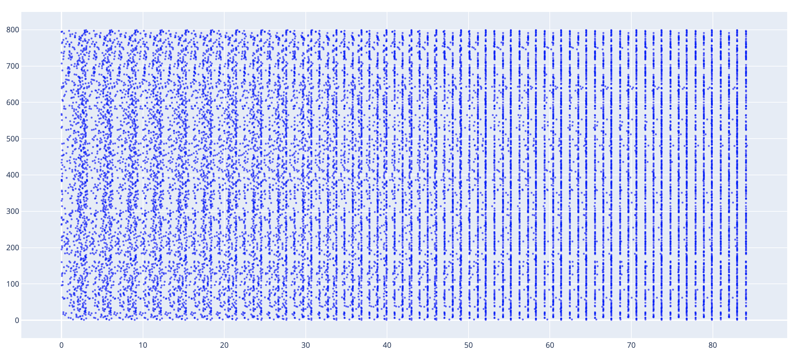
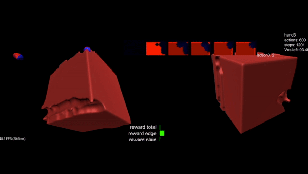

Synchronization in dynamical systems: Fireflies
A long-term goal is having a music code library/toolkit containing algorithms that simulate complex systems. The current work is a first step twoards that. Firefly-synchronization is a biological phenomenon in which the emission of flashes starts of randomly, and over the course of a night synchronizes. This means that the firing of different fireflies gets correlated over time until the firing of all flies happens in synchrony. This phenomenon has been studied by biologists and mathematicians, which resulted in multiple papers with mathematical models decribing it. The paper I used for reference was called Firefly-inspired Heartbeat Synchronization in Overlay Networks. The algorithm described is the ermentraut algorithm, which adjusts the firing frequence of each fly depending on firing behavior of its neighbors. The article presented a continuous-time approach, so it took some modifications to make it work in a discrete-time setting. However, implementing it into python code, gave quite a nice result. A result of a synchronization run with 800 fireflies is plotted on the graph below. Each blue dot is a flash event from firefly ID (y-axis) on time in seconds (x-axis). As you can see, the simulation converges into a synchronous firing within ~10 seconds. I've already managed to connect firing events into my midi port with python's mido midi library. Below is an example audio file made from synchronizing while also lowering the natural firing frequency over the course of a simulation, which results in some pretty interesting path towards a slow synchronization at the end. Next step is making fireflies reactive to other inputs (from e.g. other Ableton midi instruments). Also converting our python code into a Javascript Max for Live device is on the planning. The code can be found on my github.

2D & 3D sculpting with Unity
As an ML-researcher/artist at Onformative, Berlin, I'm working on a 3D digital sculpting project in Unity3D. We're using reinforcement learning, enabled in Unity via its ml-agents library, to train an agent to creatively remove parts of a block to get to a desired outcome. The final version will have the agent using different tool shapes which will result in different aesthetics.

Visualizing image recogntion models' representations
The biggest critique of using deep neural networks as models in science is that we don't know how exactly they compute. They're being called black box models for that reason. e.g. understanding a black box like the brain with another black box is not useful. However, various attempts have been made to get a better understanding of it, by presenting images, and visualizing the representations in different layers. One other way to do this is synthesizing input images by using gradient-ascent to maximise classification score on a selected class, filter, or neuron. This is called Activation Maximization. To play with that, I used CIFAR10 to train a CNN and applied activatin maximization on it. My results are visualizations of maximizing the classification of specific classes on Cifar10. I did get some good ones that looked like the various categories I was trying to visualize. However, after playing a bit more with it I got some unexpected results, displayed on the right. A lot of the work is playing with different regularization techniques on updates to the synthetic input image. Stronger natural image priors are necessary to produce better visualizations with this gradient ascent technique. Playing around means adjusting the amount of the regularizations available. L2 regularization helped a lot, but I found that higher degrees of gaussian regularization (used in this paper to correlate pixels more with another) gave a really cool aesthetic to the output. It's all about finding the balance. My results were a bit overdone on the regularization-end. I was quite surprised how the results didn't contain any strong features of the category they represented, yet they're rather beautiful. Another way to describe this is making adversarials pretty.